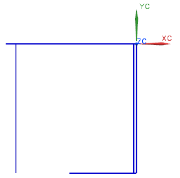
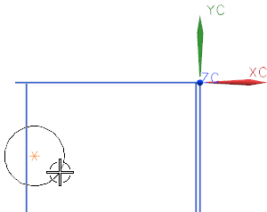

打开部件并创建一个圆
-
打开 ffm3_profile_2，如果建模应用模块尚未激活，请开始建模应用模块。

-
选择插入→曲线→基本曲线。
-
在基本曲线对话框中，确保线串模式复选框已被清除。

线串模式
-
在基本曲线对话框中，点击圆 。
您将创建轮廓左侧较小的圆弧。

圆弧的半径必须是13 mm，圆心位于原点左侧124 mm 处，并且在 WCS 原点下方55 mm。

-
在跟踪条上的 XC 输入框中，键入 –124。
-
按下 Tab 跳到 YC 输入框，键入–55 并回车。
一个星号出现在指定的位置。

-
移动光标在图形窗口中晃动，圆将在您指定的圆心处开始出现。

-
移动光标到上端水平线(不要点击)，避免靠近控制点，圆将与此直线相切。

-
移动光标到直线端点，然后依次到其它几何体，查看显示的圆和状态行上的反馈信息。
-
移动光标，知道显示的圆近似于下图所示，然后点击鼠标左键。